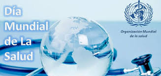

Desde 1950 se conmemora el Día Mundial de la Salud, una fecha que definitivamente no podemos dejar pasar sin ponerle atención.
La salud es un tema sobre el que deberíamos reflexionar, pero sin duda atender de forma cotidiana. Por desgracia la mayoría no tenemos una cultura de la prevención y más bien acudimos a revisión médica cuando ya estamos enfermos.
El Día Mundial de la Salud se celebra desde 1950 y aunque en sus inicios la intención fue conmemorar la fundación de la Organización Mundial de la Salud (OMS), años más tarde cada jornada se dedicaría a un tema prioritario en materia de salud pública. De esta forma han existido días enfocados a la salud mental, poliomelitis, tensión arterial, vacunación, entre otros.
Este 2016, la OMS dedicará el 7 de abril a la diabetes, ya que la organización estima que para el 2030 este padecimiento podría convertirse en la séptima causa de muerte a nivel mundial. Buscando revertir este panorama, la campaña de este año está enfocada en la concienciación de las consecuencias de la diabetes, así como en las medidas para prevenirlas mediante un disgnóstico oportuno y adecuado tratamiento.
La OMS define a la diabetes como "una enfermedad crónica que se produce cuando el páncreas no produce suficiente insulina, o cuando el cuerpo no puede utilizar eficazmente la insulina que produce. La insulina, una hormona que regula el azúcar en la sangre, nos aporta la energía necesaria para vivir. Si no puede llegar a las células para convertirse en energía, el azúcar se acumula en la sangre hasta alcanzar niveles perjudiciales".
Existen dos tipos de diabetes: tipo 1 y tipo 2. Cuando una persona padece diabetes tipo 1, no produce insulina, por lo que necesitan inyecciones de insulina para poder vivir. Con la diabetes tipo 2, las personas sí producen insulina, aunque no la suficiente o su cuerpo no la procesa adecuadamente.



 2
2